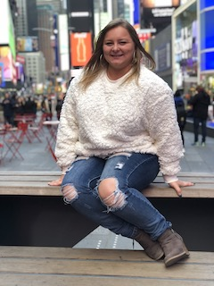

About Me
A bright, younge, enthusiastic, driven are just a few adjatives to desicribe Danielle Gehr. She lives in Lancaster Pennsylvania with her family. She is the oldest of five siblings. She currently works as a medical sales represenative with her father. Along with her full time job, she also works part time for the YMCA as a lifeguard and swim instructor. She runs and coaches KineticNRG Volleyball Club along side her father. She wants to continue to inspire younge athletes through her passion of volleyball.
Danielle does work hard, but she has intrests outside of work. She loves to experience other cultures. Experienceing another culture can really help a person understand a point of view of someone different. Traveling is not the only thing of intrest, spending time with family and friends is really important to Danielle. Other activities that Danielle does in her spare time is read to expand her knowledge and for pure enjoyment, making creative crafts, watching different shows on netflix or other channels/streaming services and working out at the gym.
aking care of her mind, body, and spirit is very important to Danielle. She tries to get to the gym at least five times a week and have a healthy diet. The types of exercises she enjoys is participating at a crossfit gym. She recently joined a gym that will allow her to pursue her fitness intrest in boxing, kickboxing, and self-defense. Her interest in physical fitness started at a younge age when she looked up to her father teaching health and physical education at her elementry school. She decided to pursue a physical education degree at Maryville College, while she did not continue to pursue the license to teach she has a Bachlores in phyiscal education. While at Maryville College she played volleyball. While her 4 years at Maryville College she was a lifeguard, student ambassador, student intramural coordinator, in the student council, and president of athletes with a change club.